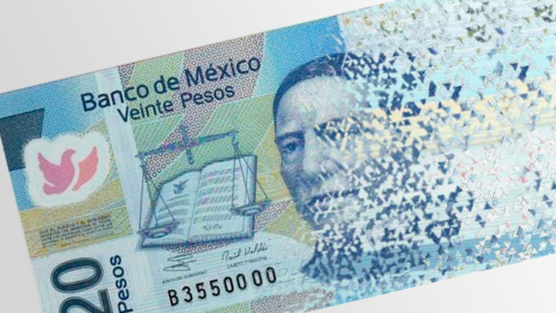

Desaparecerá el billete de 20 pesos
El billete de 20 pesos desaparecerá de la familia de billetes de México
El billete de 20 pesos desaparecerá de la familia de billetes de México
Alberto Aguilera Valadez, mejor conocido como Juan Gabriel, murió un 28 el agosto de 2016 a causa de un paro cardíaco.